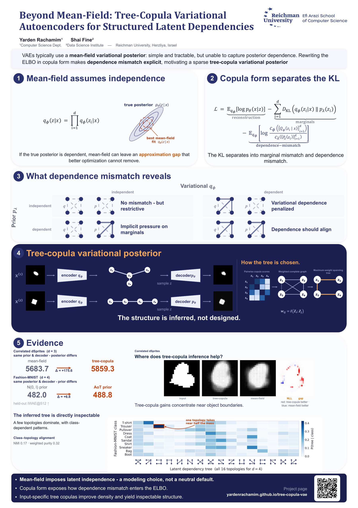

Beyond Mean-Field: Tree-Copula Variational Autoencoders for Structured Latent Dependencies
The tree is input-specific.
How does each input get its own latent tree?
The encoder predicts pairwise dependence; soft tree marginals make the discrete structure learnable.
Illustrative method example
Encoder
Encoder
near-hard
softer / alternatives
Controls the concentration of the illustrative soft distribution over spanning trees for both samples.
Hard MWST
posterior structure
Soft β(x,τ)edge inclusion probabilities
Hard MWST
posterior structure
Soft β(x,τ)edge inclusion probabilities
Decoder
Decoder
Poster

View / download full-resolution poster (PDF)